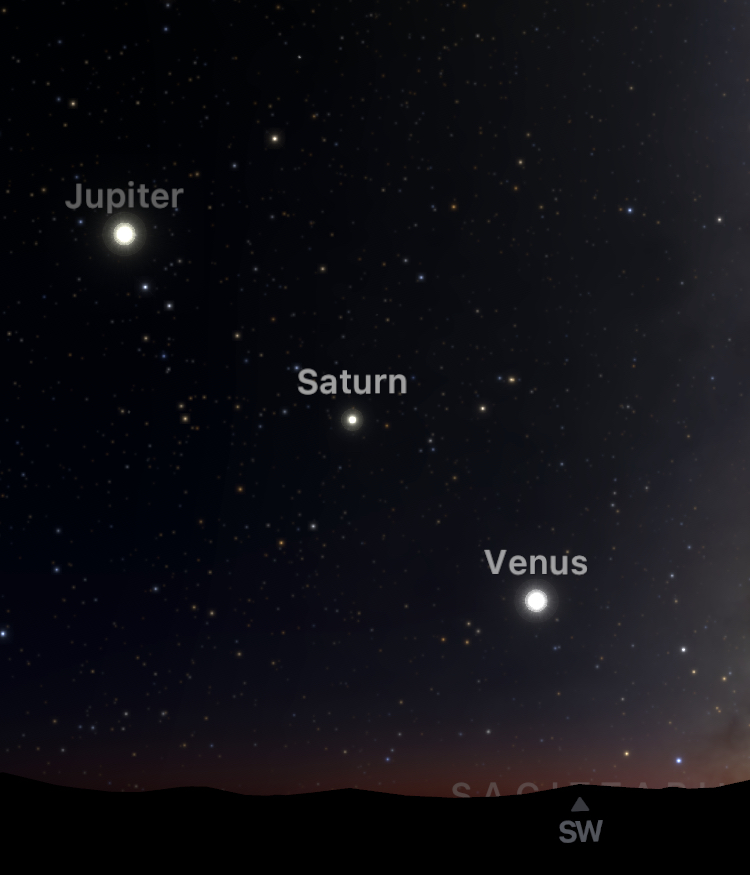

Have you ever looked at the sky, and wondered “is there a meaning behind these stars?” Well, if you ever have, Stargazing is something you should definitely try out. Stargazing is a common hobby among many people in the world. Many find stargazing to be a great way to connect with nature, as it allows individuals to explore the neighborhoods and outside surroundings. It also acts as a stress reliever, as looking at stars can ease your mind and bring peace. It’s also a fun family activity, where parents and kids can work together to set up telescopes, look through binoculars, and identify constellations. I created this webpage to help everyone in my neighborhood of St. Catharines to try out stargazing.
Night Sky in winter
As we see longer nights in the winter, we will have more time to observe the night sky as we please. Winter night sky is extraordinary, as many of the brightest stars and easy-to-identify constellations are visible throughout this period. Even though many can’t be seen in the city, driving as little as 30 minutes to the west countryside will provide you with the best stargazing conditions.
Night Sky this month (December)

Night Sky in December
December is blessed with two meteor showers, a major one and a minor one. The major meteor shower is the best one seen the year, known as "Geminids". Geminids peak on December 13-14th. However, the moon could be an obstacle tho. On 13-14th, we will see waxing gibbons moon interfering with our metro observe. But if you are willing to stay up till the morning, the moon will set at 3 AM, and you will have more than three hours to observe Geminids. You will see around 50 meteorites per hour if you travel form outside the city towards countryside. The minor meteor shower is called 'Ursids', and will take place later this month. It will peak on the night of December 21–22nd. It only produces 10 to 20 meteors an hour, but you probably won't see that many this year with the waning full moon glowing in the night sky at that time.
If you would like to observe planets, this is one of the best months. If you watch the southeastern sky right after the sun has set, you will see three planets in the solar system lined up in a diagonal line nearly equally spaced between each other. Venus will be on the lowest, following Saturn and Jupiter.
The View of Venus, Saturn and Jupitor in Southwestern Sky
You will also see some of the iconic constellations in the night sky. Most iconic will be Orion, the hunter, easily identified with the three stars on its belt. You will also see one of the iconic zodiac signs, Gemini, to Orion's north. Gemini is signified with its two brightest stars Castor and Pollux, forming twin heads.
This month is also home to some of the brightest stars. Right after sunset, the fifth brightest star, Vega, is visible in the southwest direction. Soon after, Sirius, the brightest star in the night sky, rises from the east, reaching the peak horizon during midnight. The sixth brightest star, Capella, also can be seen close to the north of Sirius. Another bright star, Arcturus, rises from the east towards the early morning. It is located in the 'Boots' constellation and is the 4th brightest star in the night sky.
The most interesting sight of this month is the visibility of a cluster called "Christmas Tree Cluster", formally known as NGC 2264. It is found closer to the Orion constellation. However, you will need a pair of binoculars. The easiest way to find it would be scanning the area left of Betelgeuse; the bright reddish star stands for the left arm of Orion. Christmas Tree cluster will be high enough in the sky for decent viewing between 8 and 9 PM. When looking through binoculars, you will see how 20 about twenty stars are arranged in the shape of a Christmas tree.

Close-up view of the Christmas Tree Cluster